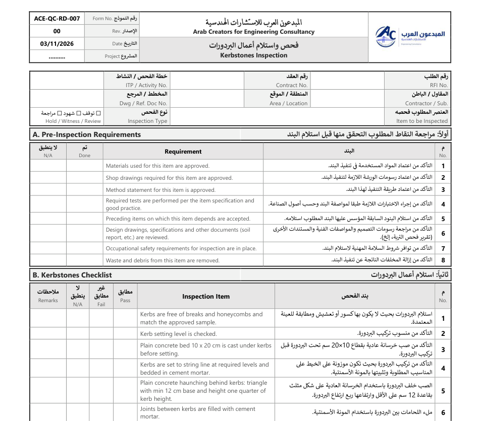

تحميل الملف مجانًاملف وورد قابل للتعديل، عربي وإنجليزي
بعض البنود اللي بيغطيها النموذج
- استلام البردورات بحيث لا يكون بها كسور أو تعشيش ومطابقة للعينة المعتمدة.
- التأكد من منسوب تركيب البردورة.
- التأكد من صب خرسانة عادية بقطاع 10×20 سم تحت البردورة قبل تركيب البردورة.
- التأكد من تركيب البردورة بحيث تكون موزونة على الخيط على المناسيب المطلوبة وتثبيتها بالمونة الأسمنتية.
- الصب خلف البردورة باستخدام الخرسانة العادية على شكل مثلث بقاعدة 12 سم على الأقل وارتفاعها ربع ارتفاع البردورة.
- ملء اللحامات بين البردورة باستخدام المونة الأسمنتية.
- التأكد من تنظيف وفتح وكوي الفواصل (العراميس) بين البردورات.
- الكود المصري لأعمال الطرق الحضرية والخلوية، مواصفات المشروع
طريقة الاستخدام
اكتب بيانات المشروع ورقم النموذج في الرأس، وعلّم على كل بند (مطابق، غير مطابق، لا ينطبق) أثناء المعاينة في الموقع، واكتب الملاحظات في العمود المخصص، ثم يوقّع المقاول والاستشاري. احتفظ بالنموذج مع طلب الفحص (RFI) في ملف البند.
النماذج من إعداد فريق المبدعون العرب للاستشارات الهندسية، ومسموح استخدامها وتعديلها في مشاريعك. يمنع إعادة نشرها أو بيعها.